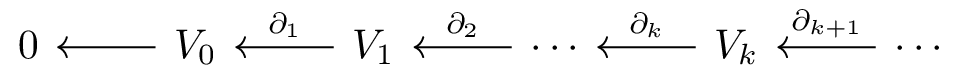

Quiver Theory, Zigzag homology and Deep Learning
Anjan Dwaraknath
Institute for Computational and Mathematical Engineering
August 20, 2020 anjandn.github.io/quiver-slides
Collaborators/Support
Collaborators who appear in this work
- Gunnar Carlsson
- Bradley Nelson
Funding I've received while working on these topics
- Stanford Graduate Fellowship
Outline
- Topological Data Analysis Background
- Quiver Representation Framework for TDA
- Algorithms
- Application of Zigzag homology to MNIST
Topological Data Analysis
Applies techniques from algebraic topology to study data
Models datasets as a topological space by constructing Simplicial complexes
Studies the various topological invariants to better understand the data
Many applications have been developed, ranging from drug discovery to neuroscience
Chain Complex
A chain complex is a sequence of vector spaces derived from a simplicial complex by using simplices as formal basis vectors
The linear transformation on the arrows are the boundary operators and satisfy the property
\[\partial_k \circ \partial_{k+1} = 0\]Homology
Homology aims to characterize the number and types of 'holes' in your topological space
\[ H_k(C) = \text{ker }\partial_{k} / \text{im }\partial_{k+1}\]The rank of these vector spaces correspond to the Betti numbers
Homology is functorial
Functoriality
Functoriality is a property that allows us to extend constructions to the maps between the objects
The Homology construction $H_k$ takes chain complexes to vector spaces. Due to functoriality, $H_k$ takes takes chain maps to linear transformations.
Persistent Homology
If we have a sequence of chain complexes with chain maps between them,
We can apply homology to each chain complex and due to functoriality, we get,
Zigzag Homology
In persistence homology, all the maps were in the same direction, we can also have a zigzag diagram of chain complexes
Applying the Homology functor, we obtain a zigzag diagram of vector spaces.
Why is Zigzag interesting?
Although, it seems like a small change, of allowing arrow directions to change,- It is not obvious that there is a simple classification of zigzag diagrams upto isomorphism.
- Only one stable implementation is available : dionysus library
- The algorithms in the literature for zigzag are very different compared to standard persistence
- New interesting applications are possible with zigzag homology
Application of Zigzag Homology
Suppose there is a large dataset for which we wish to compute the homology
One might undersample the dataset before applying the TDA pipeline

In order to build statistical confidence, the process might be repeated with different samples
How do we know if the features discovered in one sampling correspond to the ones discovered in the other?
Topological Bootstrapping
We can construct a zigzag diagram from the various samplings
A zigzag diagram with unions of samplings, ensures that we can always find a map
Long bars correspond to the same feature being discovered in multiple samplings
Application of Zigzag - Level sets
Suppose we define a function over our dataset
Standard persistence homology only allows us to study superlevel or sublevel sets
Zigzag homology allows us to study an interval level set or in the continuous limit, the level sets themselves
Application of Zigzag - Level sets
Level set homology can be very different from sublevel or superlevel set homology.
Existence of Zigzag barcodes
Theorem from Gabriel (1972) [G 72] showed that zigzag diagrams can be decomposed into a finite direct sum of interval indecomposables
As we will see later, this directly translates into the existence of barcodes.
The original theorem only proves existence and uses the language of quiver representations.
Previous Algorithms
Algorithm from [CdSM 09]
Contributions
A new framework to construct algorithms for TDA - using quiver representations and matrix factorization.- It encapsulates computing homology analogous to how it is done in theory allowing for trivial parallelizability.
- Upto 600x speedup over existing libraries for zigzag homology.
- Algorithms for persistence and zigzag homology are placed in the same setting.
Contributions
- In addition to trivial parallelizability of homology, it allows for a divide and conquer approach.
- Can handle non-inclusion maps.
- The algorithm is general enough to serve as a new constructive proof of Gabriel's Theorem for type A quivers.
For details : Persistent and Zigzag Homology: A Matrix Factorization Viewpoint [CDN 19]
Code: BATS and BATS.py
Trivial Parallelizability
As we had seen earlier, the zigzag diagram is computed using FunctorialityUsing the new framework, we can apply the same principle for computation. Homology can be computed in parallel, followed by extracting the barcodes from the zigzag diagram
Topologists' Perspective
Topologists have always been using this approach. They compute homology of the pieces and all their intersections, then assemble it together
For example: Mayer–Vietoris sequences and Spectral Sequences.
The new framework enables us to translate that thinking directly into algorithms.
New Matrix Factorization Perspective
Outline- Quiver representations
- Convenient methods to change basis algorithmically
- Linear algebra tools
- Quiver algorithm
Companion Matrix
The companion matrix of a quiver is the block adjacency matrix, with the quiver edge matrices as the blocks
\[ V_0 \leftarrow V_1 \leftarrow V_2 \;\;\;\;\;\;\;\;\;\; V_0 \rightarrow V_1 \leftarrow V_2 \] \[ \begin{bmatrix} 0 & A_0\\ &0 & A_1 \\ & & 0 \end{bmatrix} \;\;\;\;\;\;\; \begin{bmatrix} 0 & \\ A_0 &0 & A_1 \\ & & 0 \end{bmatrix} \]The Canonical Form
The existence of the canonical form is guaranteed by Gabriel's theorem. [G 72]
The E matrices are pivot matrices - each row and column have at most one 1.
Since we are doing a similarity transformation - this is similar to an eigenvalue or Jordan decomposition.
However it is not an arbitrary similarity transformation, the matrices are restricted to be block diagonal.
Divide and Conquer Algorithm
We can parallelize even further than the trivial parallelizability we saw before.
We can divide up a very long quiver into two parts.
Run a version of the quiver algorithm on each in parallel.
Stitch them together in the merge step.
Application of Zigzag homology to MNIST
Can we use TDA to produce features that are more human-like.
We first convert the image to a graph of non-zero pixel, then construct the flag complex
Featurization
To include orientation information, we sweep the image along 8 directions, to produce a directional barcode.
Neural networks require finite representation as inputs, so symmetric polynomial featurization is used.
\[ F(m,n) = \sum_{i=1}^{N_f} (b_i+d_i)^m(d_i-b_i)^n \]Results
A feed forward neural network was trained on the polynomial features to classify the digits.
Zigzag homology performed better, because an interval scan of the image of the digit, is more expressive than just using the sublevel sets.
Acknowledgement
Questions?
Bibliography
[CdS 10] Carlsson, de Silva. Zigzag Persistence. 2010.
[CdSM 09] Carlsson, de Silva, Morozov. Zigzag Persistent Homology and Real-valued Functions. 2009.
[N 20] Nelson. Parameterized Topological Data Analysis. 2020.
[G 72] Gabriel. Unzerlegbare Darstellungen I. 1972.
[GND+ 20] Gabrielsson, Nelson, Dwaraknath, Skraba, Carlsson, Guibas. A Topology Layer for Machine Learning. 2020.
[M] Morozov. Dionysus2. https://mrzv.org/software/dionysus2/
[ZC 05] Zomorodian, Carlsson. Computing Persistent Homology. 2005.
Slides were made using the following libraries
- HTML Slides : Reveal.js - https://github.com/hakimel/reveal.js
- Animations : Manim - https://github.com/3b1b/manim
- The code to glue them together - https://github.com/anjandn/manim_reveal